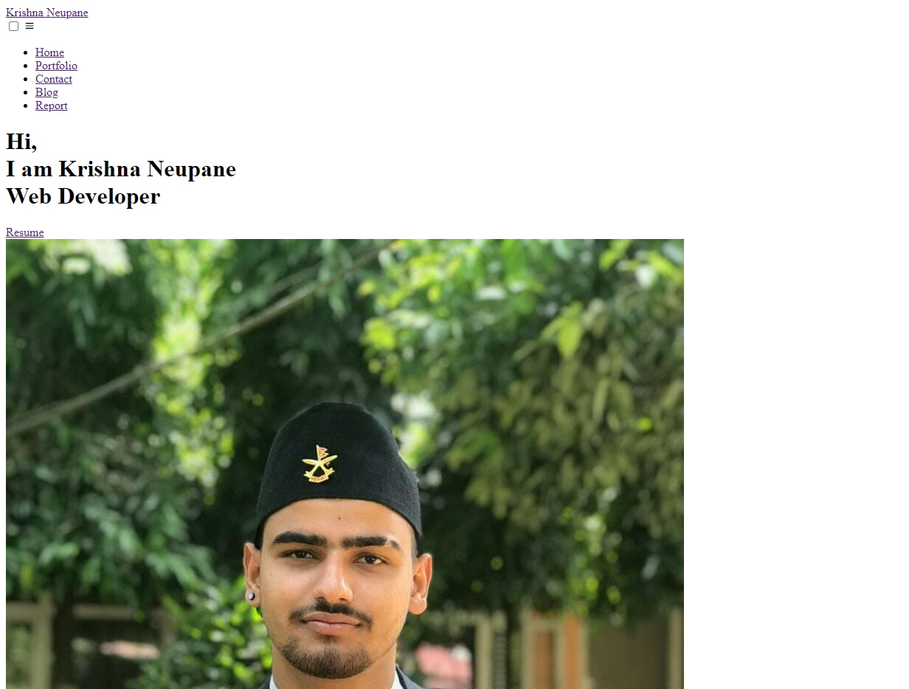
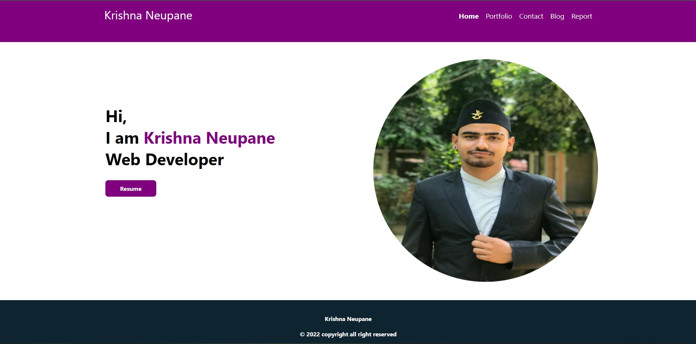
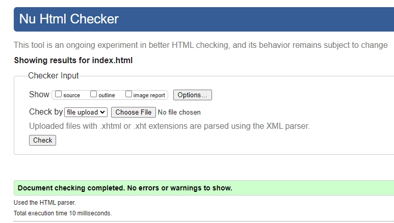
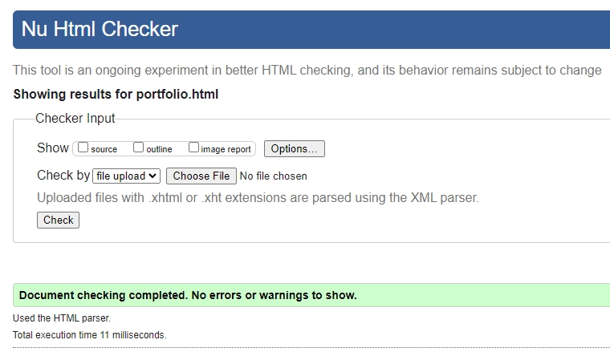
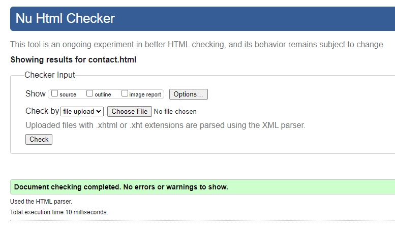
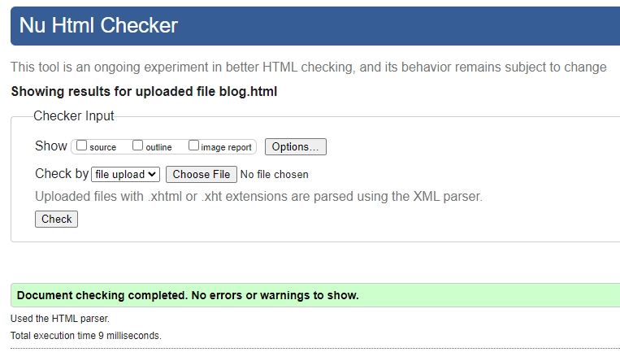
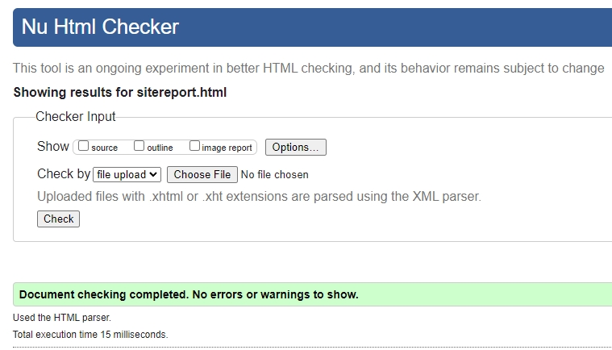

Introduction
This website is created to demonstrate the capabilities of HTML and CSS. By creating this website, I can experiment with new HTML and CSS capabilities.
To make the website more effective and fascinating, icons are imported from box icon and built-in fonts are integrated.
In this website I have made the different five pages (Home, portfolio, contact, Blog and Report) and I linked this page with each other by using the hyperlink.
Module Experience
In the starting of the semester, I was little bit familiar with HTML and CSS although, I took long time on research and watch the videos before starting to this project because it is the first web development project. After researching the other websites and watching a lot of videos, I started to develop the web page using my knowledge and skill which I learnt from classes and the research. After completion of this website, I learnt a lot of new things and different code, tags and using the GitHub to manage the code. In the meantime, of this project, I got lot of errors and after continuously working on this website for few times I got the success and result in the responsive and beautiful website. Complex to implement mobile responsive friendly design faced problem while implementing hamburger menu. Easily to implement to launch mail program after submitting form which is also mentioned in slides.
Progress
At first, I made a sketch in the paper and finalized the user interface. After this I started to create html pages without CSS which looks dull.

Furthermore, I add CSS in this plain html pages and the result turns in to the attractive portfolio website.

HTML Validation Results
Index Page
Portfolio Page
Contact Page
Blog Page
Site Report Page
CSS Validation Results